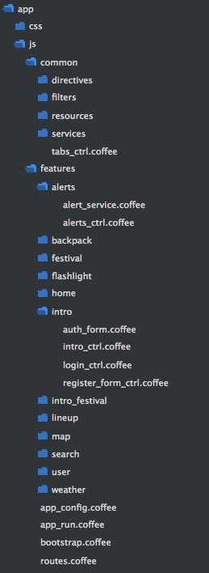

Modular Angular
Providers, services, factories.
Resources, wrappers, modules.
Basics first
How does the angular invoke services?
$injector.invoke example
var app = angular.module("app");
app.controller("UsersController", function UsersController($scope, UsersResource) {
$scope.users = UsersResource.getAll();
});
- Angular runs `$injector.invoke()` on the `UsersController` function
- $injector parses the function's arguments into a string array: ["$scope", "UsersResource"]
- For every passed argument, it runs `getService(serviceName)`: which initializes the service OR if already initialized, gets it from the cache
- Finally, runs the `UsersController` function with injected services returns the function's value: `return fn.apply(context, services);`
Example
app.factory("CarsResource", function(){ return { getAll: function() { return [{name: "Ferrari"}]; } }; });// ... somewhere in the controller app.controller("CarsController", function ($scope, CarsResource) { $scope.cars = CarsResource.getAll(); });
Part I
Providers, services, factories.
What are they and what is the difference?
Let's read the docs... (RTFM)
Source: docs.angularjs.org
An Angular service is a singleton object created by a service factory.
These service factories are functions which, in turn, are created by a service provider.
The service providers are constructor functions. When instantiated they must contain a property called
$get, which holds the service factory function.
... let's start from the code
and translate the docs word by word
"The service providers are constructor functions. When instantiated they must contain a
property called $get, which holds the service factory function"
Provider example
app.provider("Greeter", function GreeterFactoryProvider() {
// $get method initializes the factory
this.$get = function GreeterFactory() {
return {
sayHello: function() {
return "hello";
}
};
};
});
// USAGE
app.run(function(Greeter){
console.log(Greeter.sayHello());
});
Provider example with configuration
app.provider("Greeter", function GreeterFactoryProvider() {
// private, local variable
var options = { locale: "en" };
// public method available only in the .config() phase
this.setLocale = function(locale) {
options.locale = locale;
};
// $get method initializes the factory
this.$get = function GreeterFactory() {
return {
sayHello: function() {
return options.locale == "en" ? "hello" : "hola";
}
};
};
});
// USAGE
app.config(function(GreeterProvider){
GreeterProvider.setLocale("es");
});
app.run(function(Greeter){
console.log(Greeter.sayHello());
});
Provider example - more usable
app.provider('myFacebook', function() {
// private, local variable
var initParams = {};
// public method available only in the .config() phase
this.init = function (appId) {
initParams.appId = appId;
FB.init(initParams);
};
// $get: defines the `myFacebook` singleton service
this.$get = function ($q) {
return {
// public method, available as `myFacebook.login()` in the controllers
login: function () {
var deferred = $q.defer();
FB.login(deferred.resolve)
return deferred.promise;
}
}
};
};
// Usage
// Let's configure the myFacebook service
// Beware:
// - myFacebookProvider is only visible in the app.config phase.
// - we cannot access `myFacebook` service here yet.
app.config(function(myFacebookProvider){
myFacebookProvider.init("123");
});
// Finally, let's use the myFacebook service.
app.controller("LoginController", function(myFacebook){
$scope.login = function() {
myFacebook.login();
};
})
"Service factories are functions created by a service provider"
// source code taken straight from angular.js
function factory(name, factoryFn) {
return provider(name, {
$get: factoryFn
});
}Factory is just a provider with $get method and no configuration.
Factory example
app.factory("Auth", function AuthFactory(){
var currentUser;
function loginAsAdmin() {
currentUser = {id: 1};
}
return {
login: function login(name) {
if (name == "obama") {
loginAsAdmin();
}
}
};
});
// USAGE
app.controller("FooController", function(Auth) {
$scope.login = function() {
Auth.login($scope.username);
};
});
When injecting, Angular calls the AuthFactory function and stores it's value.
AuthFactory is initialized only once, on first demand - after that, the previous [cached] value gets retrieved.
"Service (...) is created by a service factory"
// source code taken straight from angular.js
function service(name, constructor) {
return factory(name, ['$injector', function($injector) {
return $injector.instantiate(constructor);
}]);
}service() is just a wrapper around the factory() method
You can easily achieve .service() effect by using .factory() method.
There are no other differences.
Service vs Factory
angular.factory('myFactory', myFactoryFunction); angular.service('myService', myServiceFunction);// Factory: the function that you write will be invoked: myInjectedFactory <--- myFactoryFunction()// Service: the function that you write will be new-ed: myInjectedService <--- new myServiceFunction()
The only difference between the service and the factory is the $injector.instantiate()
// source code taken straight from angular.js
function instantiate(Type, locals) {
var Constructor = function() {},
instance, returnedValue;
Constructor.prototype = Type.prototype;
instance = new Constructor();
returnedValue = invoke(Type, instance, locals);
return isObject(returnedValue) || isFunction(returnedValue) ? returnedValue : instance;
}
In short:instantiate(Car)will return a new Car instance,
UNLESS the Constructor method (function Car(){}) returns something: then it returns the returned object.
These are the same
function AuthFactory() {
var currentUser;
function loginAsAdmin() {
currentUser = {id: 1};
}
return {
login: function login(name) {
if (name == "obama") {
loginAsAdmin();
}
}
};
}
-
app.service("Auth", AuthFactory); -
app.factory("Auth", AuthFactory);
-
// `Auth` is an object // with `.login()` method -
// `Auth` is an object // with `.login()` method
These are not the same
function AuthClass() {
var currentUser;
function loginAsAdmin() {
currentUser = {id: 1};
}
this.login = function login(name) {
if (name == "obama") {
loginAsAdmin();
}
};
}
-
app.service("Auth", AuthClass);// `Auth` is an object // with `.login()` method -
app.factory("Auth", AuthClass);// `Auth` is undefined
"Service is a singleton object"
(and so is the Factory)
var uniqueId = 0; app.service("Car", function Car() { this._id = ++uniqueId; this.getId = function getId() { return this._id; }; });$injector.invoke(function(Car) { console.log(Car.getId()); // => 1 });$injector.invoke(function(Car) { console.log(Car.getId()); // => 1 });
Factory's function is initialized only once, and then its' value is stored in the cache.
Other useful provider-like methods:
// function value(name, value) // .value() is just a factory returning given value. app.value('movieTitle', 'The Matrix');// function constant(name, value) // Constants can be injected everywhere, // but can never be changed. app.constant("ENV", "staging");// function decorator(serviceName, decorFn) app.config(function ($provide) { // Use decorator, to replace existing providers. $provide.decorator('movieTitle', function ($delegate) { return $delegate + ' - starring Keanu Reeves'; }); });
When to use them?
-
Services
- Singleton objects
- Global data available in the whole app
-
Factories
- Whenever you want to recreate something (Class functions)
- f.e. FormObjects.
-
Providers
- Whenever you use Factory or Service, but need to setup something before the application starts
- f.e. external API/library wrappers
Real-life examples
ngFacebook - a wrapper for FB api
Resources (Repositories?) - to handle data management
Resources (Repositories?) - to handle data management
Form objects - to handle form validation, data handling and submitting
PromiseFactory - small, often usable class function
ngCordova - wrappers for external APIs
Last thoughts
Name your objects consequently
Good
app.factory("FormFactory", function() {
return function FormFactory() { ... };
});
app.factory("UserFormFactory", function(FormFactory) {
return function UserFormFactory() { ... };
})(append `...Factory` to inherited Class factory functions)
Wrong
app.provider("myFacebookProvider", function() { ... });
app.config(function(myFacebookProviderProvider) { ... });
app.run(function(myFacebookProvider) { ... })(Angular automatically appends `Provider` to providers in .config() phase)
Good
app.provider("myFacebook", function() { ... });
app.config(function(myFacebookProvider) { ... });
app.run(function(myFacebook) { ... })
OK (but not necessary):
app.service("UserSettingsService", function() {
// some singleton class with global user defined settings
});
// could be as well just "UserSettings", if it's explicit enough
app.service("FlashMessagesService", function() {
// .set and .getAll() methods
});
// IMHO better than just "FlashMessages"
// "FlashService" would be even betterAlways remember: better be explicit, than non-readable.
Even better: be consequent.
Move logic from controllers to external services/factories
- Helps you to follow the SOLID law
- Controller is much more readable
- Services are much easier to test
Move logic from controllers to external services/factories
Examples
- Move data storage, data retrieval (http requests) to Resource objects
- Move form logic (f.e. validation, submitting) to small directives or factories
- Move caching to some service objects
- Move filtering to filters
Watchout for circular dependency injection
app.service("NotificationService", function(UserSettings){
// ...
if (UserSettings.allowNotifications()) sendNotifications();
});
app.service("UserSettings", function(NotificationService){
// ...
this.enableNotifications = function() {
NotificationService.sendAll();
};
});
// Angular will trigger error in the console:
// "Uncaught Error: [$injector:cdep] Circular dependency found:
// UserSettings <- NotificationService <- UserSettings"
Organize your code
-
- One class - one file
- Group by feature, then eventually by controllers, directives, etc.
- Other files, store in `common/` or similar directory
- 
Links
- docs.angularjs.org: providers
- stackoverflow: "Service vs Provider vs Factory"
- blogpost: "Angular Constants, Values, Factories, Services, Providers and Decorators, Oh My!"
- blogpost: "Angular service or Factory?"
- gist.github.com: Service, Factory and Provider examples
- blogpost: "AngularJS - Factory vs Service vs Provider"
- blogpost: "Differences between providers"
- blogpost: "Scalable code organization in AngularJS"
- blogpost: "Code Organization in Large AngularJS and JavaScript Applications"